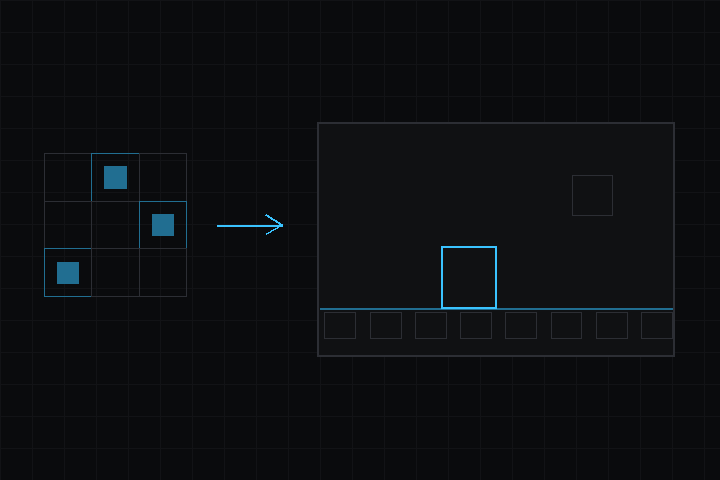

- 構築:
 1.18.0
1.18.0
|
deki-2d 0.19.0
Deki パッケージリファレンス
|

2D コンテンツ用のコンポーネント：スプライト、テキスト（BitmapFont と TTF ベイク）、アニメーション、グラデーション、ボタン、スクロール、クリッピング、ローラー。
リポジトリ: github.com/dekiengine/deki-2d · 最新リリース: 0.19.0 · エンジン 0.19.0 以降が必要 · 依存: deki-rendering, deki-input
DekiEditor --packages-add deki-2d <project> か、パッケージマネージャーからインストールします。エンジン自身のコンポーネントと C++ API は Deki のドキュメントにあります。
エディターでは 2D と表示されます。
| コンポーネント | カテゴリ | 説明 |
|---|---|---|
| AnimationComponent | 2D | オブジェクトのスプライトでフレームアニメーションのアセットを再生します。 |
| ButtonComponent | 2D | オブジェクトをボタンにします。ホバーと押下を追跡し、クリックのコールバックを呼び出します。 |
| ButtonStyleComponent | 2D | ボタンの見た目を状態ごとに決めます。色合いを変えるか、スプライトを差し替えます。 |
| ClipComponent | コア | 子の描画を矩形の範囲で切り取ります。 |
| GradientComponent | 2D | プロシージャルなグラデーションを描きます。リニア、放射状、円錐状から選べます。 |
| RollerComponent | 2D | ピッカーホイールです。値のリストを慣性で回し、1 つの値で止まります。 |
| ScrollComponent | 2D | ドラッグで子をスクロールします。慣性にも対応します。 |
| ScrollElement | 2D | リストの 1 項目のサイズを示し、スクロールコンポーネントがリストを並べられるようにします。 |
| SortingGroupComponent | 2D | 子をひとまとまりにして、シーンのほかの部分に対する描画順をまとめて決めます。 |
| SpriteComponent | 2D | スプライトを描きます。色合い、反転、タイルと 9 スライスのモードに対応します。 |
| TextComponent | 2D | ビットマップフォントでテキストを描きます。揃えと折り返しに対応します。 |
ビルドから外せる部分です。define を持つ機能はその define で切り替わり、それ以外はコンポーネントと一緒に取り除かれます。
| 機能 | define | デフォルト |
|---|---|---|
| Sprites | DEKI_FEATURE_SPRITE | オン |
| Text | DEKI_FEATURE_TEXT | オン |
| Animation | DEKI_FEATURE_ANIMATION | オン |
| Gradients | DEKI_FEATURE_GRADIENT | オン |
| Buttons | DEKI_FEATURE_BUTTON | オン |
| Scrolling | DEKI_FEATURE_SCROLL | オン |
| Rollers | DEKI_FEATURE_ROLLER | オン |
| Clipping | DEKI_FEATURE_CLIP | オン |
| Sorting Groups | DEKI_FEATURE_SORTING_GROUP | オン |
オブジェクトのスプライトでフレームアニメーションのアセットを再生します。
インスペクターでの名前: アニメーションコンポーネント · カテゴリ: 2D · 型: Deki2D::AnimationComponent
| プロパティ | 型 | デフォルト | 説明 |
|---|---|---|---|
| animation | AssetRef (FrameAnimationData) | "" | フレームアニメーションのアセットです。フレームと、それぞれを表示する長さを並べたものです。 |
| currentSequence | int32 | 0 | 再生中のシーケンスの番号です。シーケンスは 1 つのアセットの中にある個々のアニメーション (idle や walk など) です。 |
| currentFrame | int32 | 0 | 現在のシーケンス内のフレームです。値を変えるとその位置に移動します。デバッグ中に値を見るのにも役立ちます。 |
| isPlaying | bool | false | アニメーションが進んでいるかどうかです。オフにすると、最初に戻さずに現在のフレームで止まります。 |
| hasFinished | bool | false | ループしないシーケンスが最後のフレームに達するとオンになります。次へ進むタイミングを知るのに使います。 |
| playOnceOverride | bool | false | アセットでループ指定されていても、現在のシーケンスを一度だけ再生します。シーケンスが変わるとオフに戻ります。 |
オブジェクトをボタンにします。ホバーと押下を追跡し、クリックのコールバックを呼び出します。
インスペクターでの名前: ボタンコンポーネント · カテゴリ: 2D · 型: Deki2D::ButtonComponent
| プロパティ | 型 | デフォルト | 制約 | 説明 |
|---|---|---|---|---|
| inputCollider | ObjectRef (InputCollider) | 0 | このボタンをクリックできるようにする当たり判定の領域です。これがないと、ボタンは押されたことを検知できません。 | |
| state | enum | "Normal" | Normal, Hovered, Pressed, Disabled | 通常、ホバー、押下、無効のいずれかです。入力によって設定され、スタイルコンポーネントがこれを見て描画内容を決めます。 |
| isEnabled | bool | true | 無効なボタンは入力を無視し、無効の状態になります。そのため、隠さずにグレー表示にできます。 |
ボタンの見た目を状態ごとに決めます。色合いを変えるか、スプライトを差し替えます。
インスペクターでの名前: ボタンスタイルコンポーネント · カテゴリ: 2D · 型: Deki2D::ButtonStyleComponent
| プロパティ | 型 | デフォルト | 制約 | 説明 |
|---|---|---|---|---|
| button | ObjectRef (ButtonComponent) | 0 | このスタイルを切り替える状態を持つボタンです。通常は同じオブジェクトのボタンです。 | |
| sprite | ObjectRef (SpriteComponent) | 0 | このスタイルが変更するスプライトです。通常は同じオブジェクトのスプライトです。 | |
| transition | enum | "ColorTint" | ColorTint, SpriteSwap | 押したときに色合いを変えるか、スプライトそのものを差し替えるかです。色のほうが軽く、別のスプライトなら形も変えられます。 |
| normalColor | Color | "#FFFFFFFF" | transition が許すときに表示 | ボタンが操作されていないときの色合いです。 |
| hoveredColor | Color | "#C8C8C8FF" | transition が許すときに表示 | ポインターが重なっているときの色合いです。タッチ操作だけのデバイスではほとんど表示されません。 |
| pressedColor | Color | "#A0A0A0FF" | transition が許すときに表示 | 押している間の色合いです。押したことが伝わったと知らせるフィードバックになります。 |
| disabledColor | Color | "#80808080" | transition が許すときに表示 | ボタンが無効なときの色合いです。通常は薄くするか彩度を落とします。 |
| normalSprite | AssetRef (Sprite) | "" | transition が許すときに表示 | スプライト差し替えモードで、操作されていないときのスプライトです。 |
| hoveredSprite | AssetRef (Sprite) | "" | transition が許すときに表示 | スプライト差し替えモードで、ホバー中のスプライトです。 |
| pressedSprite | AssetRef (Sprite) | "" | transition が許すときに表示 | スプライト差し替えモードで、押している間のスプライトです。 |
| disabledSprite | AssetRef (Sprite) | "" | transition が許すときに表示 | スプライト差し替えモードで、無効なときのスプライトです。 |
子の描画を矩形の範囲で切り取ります。
インスペクターでの名前: クリップコンポーネント · カテゴリ: コア · 型: Deki2D::ClipComponent
| プロパティ | 型 | デフォルト | 制約 | 説明 |
|---|---|---|---|---|
| width | float | 6.25 | 単位 m | クリップ領域の幅 (メートル) です。子はこの端で切り取られます。 |
| height | float | 6.25 | 単位 m | クリップ領域の高さ (メートル) です。 |
| sortingOrder | int32 | 0 | クリップされたグループ全体の、外側のものに対する描画順です。 |
プロシージャルなグラデーションを描きます。リニア、放射状、円錐状から選べます。
インスペクターでの名前: グラデーションコンポーネント · カテゴリ: 2D · 型: Deki2D::GradientComponent
| プロパティ | 型 | デフォルト | 制約 | 説明 |
|---|---|---|---|---|
| gradientType | enum | "Linear" | Linear, Radial, Conical | リニアは下の角度に沿って色を並べます。放射状は中心点から外へ向かって色を並べます。 |
| tileMode | enum | "None" | None, Horizontal, Vertical, Both, Mirror | 最後のカラーストップより先の扱いです。端の色のままにするか、グラデーションを繰り返すか、折り返して反転します。 |
| ditherMode | enum | "Ordered4x4" | None, Ordered2x2, Ordered4x4, Ordered8x8, Ordered16x16 | ディザリングは、16 ビットのディスプレイで滑らかなグラデーションに出る縞を、細かい粒に置き換えて目立たなくします。 |
| ditherScale | uint8 | 1 | ディザパターンの大きさ (アートのピクセル単位) です。1 はピクセルごとにディザをかけ、2、4、8、16 はレトロな見た目の大きめのブロックになります。 | |
| width | float | 0 | 単位 m | グラデーションの幅 (メートル) です。 |
| height | float | 0 | 単位 m | グラデーションの高さ (メートル) です。 |
| angle | float | 0 | 単位 rad | リニアグラデーションの向き (ラジアン) です。0 で左から右へ進みます。 |
| centerX | float | 0.5 | 放射状グラデーションの横方向の中心で、0 から 1 の値です。0.5 が真ん中です。 | |
| centerY | float | 0.5 | 放射状グラデーションの縦方向の中心で、0 から 1 の値です。 | |
| radius | float | 0.5 | 放射状グラデーションが最後のカラーストップに届くまでの距離で、サイズに対する割合です。 | |
| stopCount | uint8 | 2 | 4 つのカラーストップのうち、いくつ使うかです。残りは無視されます。 | |
| stop1Position | float | 0 | 1 つ目のストップのグラデーション上の位置で、0 から 1 の値です。 | |
| stop1Color | Color | "#FFFFFFFF" | 1 つ目のストップの色です。 | |
| stop2Position | float | 1 | stopCount が許すときに表示 | 2 つ目のストップのグラデーション上の位置で、0 から 1 の値です。 |
| stop2Color | Color | "#000000FF" | stopCount が許すときに表示 | 2 つ目のストップの色です。 |
| stop3Position | float | 0 | stopCount が許すときに表示 | 3 つ目のストップの位置で、0 から 1 の値です。カラーストップの数が 3 以上のときに使われます。 |
| stop3Color | Color | "#000000FF" | stopCount が許すときに表示 | 3 つ目のストップの色です。 |
| stop4Position | float | 0 | stopCount が許すときに表示 | 4 つ目のストップの位置で、0 から 1 の値です。カラーストップの数が 4 のときに使われます。 |
| stop4Color | Color | "#000000FF" | stopCount が許すときに表示 | 4 つ目のストップの色です。 |
| tileWidth | float | 0 | 単位 m | タイルモードで繰り返しや反転をするときの、1 回分の幅です。 |
| tileHeight | float | 0 | 単位 m | タイルモードで繰り返しや反転をするときの、1 回分の高さです。 |
sortingOrder, ignoreClip, pixelSnap, alphaMode を RendererComponent から継承します。
ピッカーホイールです。値のリストを慣性で回し、1 つの値で止まります。
インスペクターでの名前: ローラーコンポーネント · カテゴリ: 2D · 型: Deki2D::RollerComponent
| プロパティ | 型 | デフォルト | 制約 | 説明 |
|---|---|---|---|---|
| inputCollider | ObjectRef (InputCollider) | 0 | ドラッグを受け取る当たり判定の領域です。これがないとローラーを回せません。 | |
| width | float | 6.25 | 単位 m | ローラーの幅 (メートル) です。 |
| itemHeight | float | 1.875 | 単位 m | 選択されていない 1 行の高さ (メートル) です。 |
| visibleRows | int32 | 3 | 選択中の行を含めて、一度に表示する行数です。奇数にすると選択中の行が中央に来ます。 | |
| infiniteScroll | bool | false | 最後の選択肢から最初の選択肢へつながり、ローラーが端なしで回ります。 | |
| reverseDrag | bool | false | ドラッグの向きを反転します。 | |
| options | Array<string> | [] | 選択肢を順番に並べたリストです。 | |
| selectedIndex | int32 | 0 | 現在選ばれている選択肢で、0 から数えます。 | |
| deceleration | float | 0.95 | フリックがどれだけ早く減速するかです。値が大きいほど早く止まります。 | |
| snapSpeed | float | 8 | 減速した後、ローラーが最も近い選択肢に収まる速さです。値が大きいほど強く吸い付きます。 | |
| selectedItemHeight | float | 2.5 | 単位 m | 選択中の行の高さ (メートル) です。他の行より高くすることで、選択中だとわかるようにします。 |
| selectedColor | Color | "#FFFFFFFF" | 選択中の行の文字色です。 | |
| normalColor | Color | "#808080FF" | 前後の行の文字色です。 | |
| selectedFontSize | int32 | 24 | 選択中の行の、エディターでのプレビュー用サイズです。デバイスではフォントアセットのベイク済みサイズで描画します。 | |
| normalFontSize | int32 | 16 | 選択されていない行の、エディターでのプレビュー用サイズです。 |
ドラッグで子をスクロールします。慣性にも対応します。
インスペクターでの名前: スクロールコンポーネント · カテゴリ: 2D · 型: Deki2D::ScrollComponent
| プロパティ | 型 | デフォルト | 制約 | 説明 |
|---|---|---|---|---|
| inputCollider | ObjectRef (InputCollider) | 0 | ドラッグを受け取る当たり判定の領域です。これがないとスクロールできません。 | |
| mode | enum | "NonTemplate" | NonTemplate, Template | 項目に既にある子を使うか、下のシーンから必要に応じて生成するかです。 |
| itemScene | AssetRef (Scene) | "" | mode が許すときに表示 | 生成するモードで、項目ごとに 1 つ生成されるシーンです。それぞれのコピーは、スクロールして表示されるときに内容が入ります。 |
| direction | enum | "Vertical" | Vertical, Horizontal | 縦方向か横方向に動きます。 |
| itemSpacing | float | 0 | 単位 m | 項目同士の間隔 (メートル) です。 |
| paddingTop | float | 0 | 単位 m | 最初の項目の前の余白 (メートル) です。 |
| paddingBottom | float | 0 | 単位 m | 最後の項目の後の余白 (メートル) です。 |
| paddingLeft | float | 0 | 単位 m | 左端の余白 (メートル) です。 |
| paddingRight | float | 0 | 単位 m | 右端の余白 (メートル) です。 |
| deceleration | float | 0.95 | フリックがどれだけ早く減速するかです。値が大きいほど早く止まり、小さいほど長く滑ります。 | |
| bounceStiffness | float | 0.15 | 端より先までドラッグした後に、リストが戻る強さです。値が大きいほど速く戻ります。 | |
| enableBounce | bool | true | リストを端より先までドラッグでき、離すと跳ね返ります。オフにすると端でぴたりと止まります。 | |
| enableInertia | bool | true | 指を離した後も動き続けます。オフにすると、ドラッグを終えた瞬間にリストが止まります。 | |
| reverseDrag | bool | false | ドラッグの向きを反転し、内容が指と逆向きに動くようにします。 |
リストの 1 項目のサイズを示し、スクロールコンポーネントがリストを並べられるようにします。
インスペクターでの名前: スクロール要素 · カテゴリ: 2D · 型: Deki2D::ScrollElement
| プロパティ | 型 | デフォルト | 制約 | 説明 |
|---|---|---|---|---|
| width | float | 6.25 | 単位 m | 1 項目の幅 (メートル) です。スクロールは、間隔や動ける範囲の計算にこれを使います。 |
| height | float | 3.75 | 単位 m | 1 項目の高さ (メートル) です。 |
子をひとまとまりにして、シーンのほかの部分に対する描画順をまとめて決めます。
インスペクターでの名前: ソートグループコンポーネント · カテゴリ: 2D · 型: Deki2D::SortingGroupComponent
| プロパティ | 型 | デフォルト | 説明 |
|---|---|---|---|
| sortingOrder | int32 | 0 | このオブジェクトのサブツリー全体を 1 つのまとまりとして扱う描画順です。子同士の順序はそのままでグループ全体が一緒に動くので、ある子が別のグループの子の間に入り込むことがなくなります。 |
スプライトを描きます。色合い、反転、タイルと 9 スライスのモードに対応します。
インスペクターでの名前: スプライトコンポーネント · カテゴリ: 2D · 型: Deki2D::SpriteComponent
| プロパティ | 型 | デフォルト | 制約 | 説明 |
|---|---|---|---|---|
| sprite | AssetRef (Sprite) | "" | 描画する画像です。スプライトはテクスチャアセットから取り、全体を使うか、スプライトシートから切り出して使います。 | |
| tintColor | Color | "#FFFFFFFF" | すべてのピクセルに乗算されます。白なら画像はそのままで、暗い色ほど暗くなり、アルファで薄くなります。 | |
| renderMode | enum | "Normal" | Normal, Tiled, NineSlice | 通常はスプライトを 1 回描きます。タイルは下のサイズを埋めるように繰り返します。9 スライスは角をそのままにして中央を引き伸ばすので、パネルやボタンに向いています。 |
| flipHorizontal | bool | false | 左右を反転します。別のスプライトを用意するより軽く、キャラクターを逆向きにするときによく使います。 | |
| flipVertical | bool | false | 上下を反転します。 | |
| width | float | 0 | 単位 m。renderMode が許すときに表示 | 描画するサイズ (メートル) です。0 のままなら、スプライト自身のピクセルサイズをプロジェクトの 1 メートルあたりのピクセル数で換算して使います。 |
| height | float | 0 | 単位 m。renderMode が許すときに表示 | 描画するサイズ (メートル) です。0 のままなら、スプライト自身のピクセルサイズをプロジェクトの 1 メートルあたりのピクセル数で換算して使います。 |
sortingOrder, ignoreClip, pixelSnap, alphaMode を RendererComponent から継承します。
ビットマップフォントでテキストを描きます。揃えと折り返しに対応します。
インスペクターでの名前: テキストコンポーネント · カテゴリ: 2D · 型: Deki2D::TextComponent
| プロパティ | 型 | デフォルト | 制約 | 説明 |
|---|---|---|---|---|
| text | string | "" | 描画する文字列です。改行で新しい行になり、幅を設定すると単語の区切りで折り返して幅に収めます。 | |
| font | AssetRef (BitmapFont) | "" | ビットマップフォントのアセットです。フォントは決まったサイズでベイクされるので、大きく拡大縮小するより、使いたいサイズに近いものを選んでください。 | |
| fontSize | int32 | 16 | エディターのプレビューにだけ使うサイズです。デバイスでは、フォントアセットをベイクしたサイズで描画します。 | |
| width | float | 6.25 | 単位 m | テキストボックスの幅 (メートル) です。揃えはこの幅を基準にするので、テキストが短くても影響します。 |
| height | float | 1.5 | 単位 m | テキストボックスの高さ (メートル) です。縦の揃えはこの高さを基準にします。 |
| color | Color | "#FFFFFFFF" | グリフの色です。 | |
| decorationColor | Color | "#000000FF" | フォントアセットをアウトラインや影付きでベイクしたときの、その色です。装飾のないフォントでは使われません。 | |
| pixelScale | int32 | 1 | 整数倍の拡大です。2 ならグリフの各ピクセルを 2x2 のブロックで描くので、ピクセルフォントがぼやけずにくっきり表示されます。 | |
| align | enum | "Left" | Left, Center, Right | 上の幅の中での横方向の配置です。 |
| verticalAlign | enum | "CapCenter" | Top, Middle, Bottom, CapCenter, XCenter, TypoCenter, Baseline | 上の高さの中での縦方向の配置です。キャップ中央は大文字を基準に揃えるので、たいてい見た目どおり中央に見えます。真の中央はディセンダーも含めます。 |
sortingOrder, ignoreClip, pixelSnap, alphaMode を RendererComponent から継承します。
変更履歴は英語です。
それ以前のリリース: CHANGELOG.md
パッケージのリフレクションデータから生成しています (エンジン 0.19.0)。プロパティ名はシーンファイルで使われるキーです。名前を変えても別名が残ります (互換性)。